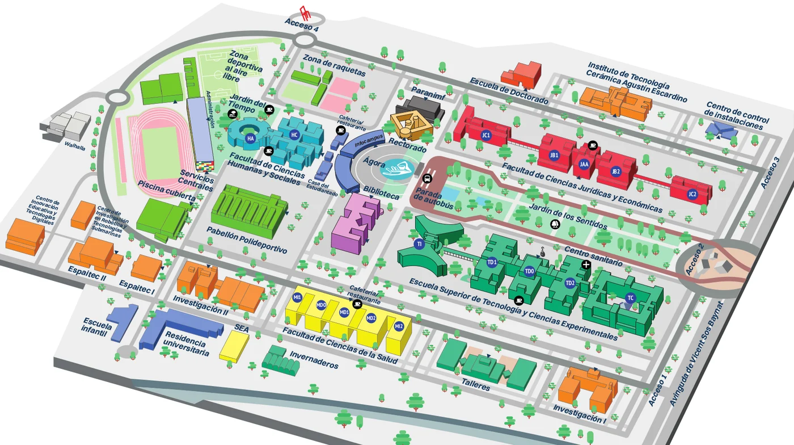

Ahora mismo
Consultando…

Hay sitio
Lleno
🔔 Pedir aviso de sitio libre
📊 A qué horas suele haber sitio
Cargando…
Datos de la página de movilidad de la UJI. Herramienta personal, sin relación con la universidad.